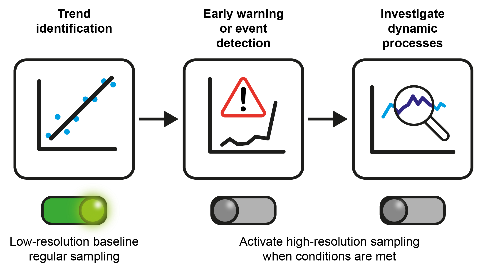

This is an R package for running adaptive sampling methods for high frequency environmental sensors.
This package can flag data for (very) high frequency sampling based on different criteria.
Installation
This package can be installed using the remotes package using the following code:
# install.packages("remotes")
remotes::install_github("NERC-CEH/adaptNP")
Using adaptNP
Example code:
library(adaptNP)
library(dplyr) # recommended for the examplesGet data:
data = Esthwaite_Buoy_HiRes # pre-loaded dataFlag data (1. given criteria in data):
criteria = '(Temp4m > 18) | (SPFD >800)'
flag_event(data,criteria)Flag data (2. clustering and other data driven methods):
## Using historical data to form clusters (i.e. state tagging)
clusters <- find_clusters(Esthwaite_Buoy_OLD_daily |>
select(Water_temperature_1m, Pyranometer, Wind_Speed) )
## write state = clusters to data frame
Esthwaite_Buoy_OLD_daily = Esthwaite_Buoy_OLD_daily |>
select(DATE, Water_temperature_1m, Pyranometer, Wind_Speed) |>
tidyr::drop_na() |>
mutate(state = modeltools::clusters(clusters))
## You can then specify the sampling rules for each cluster state and apply to your clustering results. See more in the lake water quality example.This method is used in:
Tso C-HM, Henrys P, Rennie S and Watkins J (2020) State Tagging for Improved Earth and Environmental Data Quality Assurance. Front. Environ. Sci. 8:46. doi: 10.3389/fenvs.2020.00046
Extract periods of events (given minimum segment length):
extract_event_periods(
sonde_data %>%
rename(timestamp=TIMESTAMP,flag=event_flag),
min_length=50)Down-sample data (from 2 minutes, e.g. 15 minutes, 2 days) Note in python, this can be done using the resample function in pandas.
sonde_data_15min <- sonde_data %>%
mutate(TIMESTAMP = floor_date(TIMESTAMP, "15 minutes")) %>%
group_by(TIMESTAMP) %>%
summarise(across(everything(), first), .groups='drop')
sonde_data_2d <- sonde_data %>%
mutate(TIMESTAMP = floor_date(TIMESTAMP, "2 days")) %>%
group_by(TIMESTAMP) %>%
summarise(across(everything(), first), .groups='drop') Rolling average smoothing (across all columns)
sonde_data_rollmean <- sonde_data %>% dplyr::select(-RECORD) %>%
mutate(across(everything(), ~ rollapply(.x, width = 7, FUN = mean, fill = NA, align = "center"))) %>%
drop_na(TIMESTAMP)Developer guide
To build reference, run pkgdown::build_reference().
To add data to package, run usethis::use_data(TheData).
To install package for use in vignette, run devtools::install().
To build vignettes, run pkgdown::build_articles(quiet = FALSE).
To preview pkgdown site, run pkgdown::preview_site(path='reference/index.html').